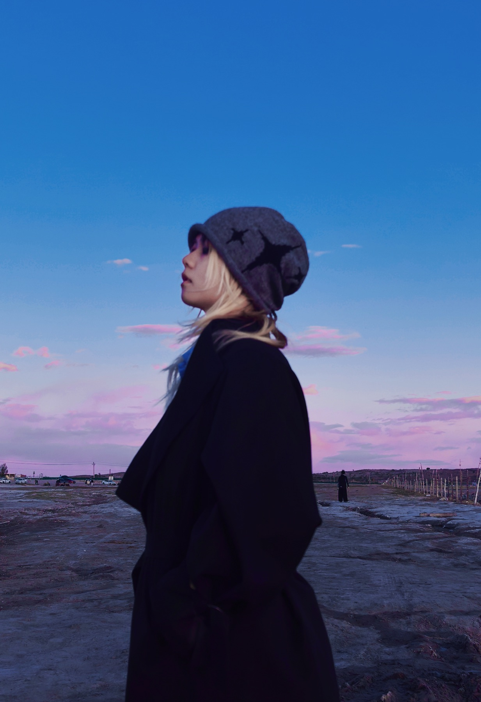

北京师范大学
2024.09-2027.06，艺术与传媒学院，戏剧与影视-广播电视（全日制研究生）。

Education
2024.09-2027.06，艺术与传媒学院，戏剧与影视-广播电视（全日制研究生）。
2019.09-2023.06，广播电视学（全日制本科），主修摄影、网络视听、节目策划与编辑等课程。
Professional Skills
AI 视频审美评测、Prompt 测试流、视觉风格判断与模型结果归因。
短视频选题、分镜脚本、现场拍摄、包装剪辑与封面制作。
摄影基础、影像观察、构图光影、空间氛围与叙事画面捕捉。
剧本创作、图文表达、活动回顾、内容策划与新媒体文案。

原创部成员。展映分会场开拓、投稿作品评审、展映物料设计与活动回顾推文撰写。
参与 4 天创作训练课程，与导演、编剧及电影行业从业者进行创作交流。
策划与拍摄微电影《绩点为王》，独立策划访谈节目《从前慢》。